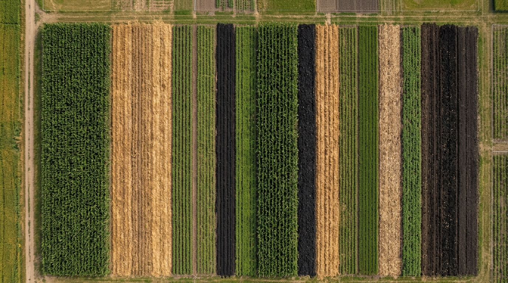
Transformamos podas de árvores urbanas em biocarvão (biochar) para turbinar o solo na plantação de milho (Zea mays L.).
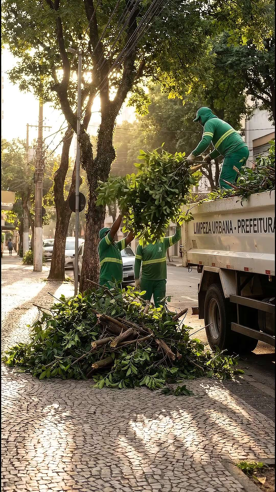
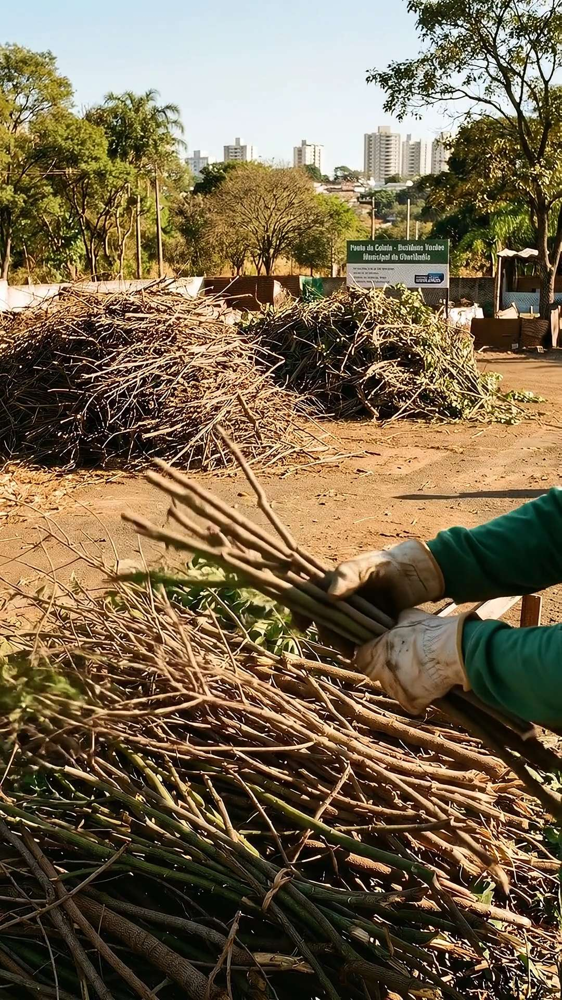
ETAPA 1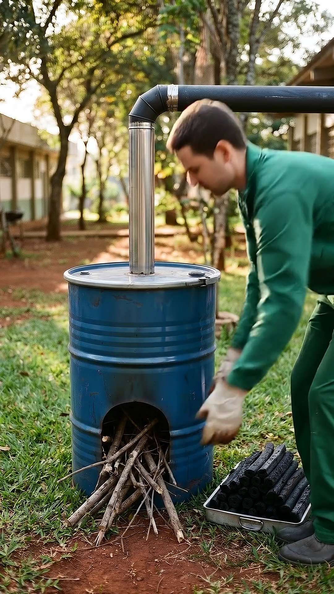
ETAPA 2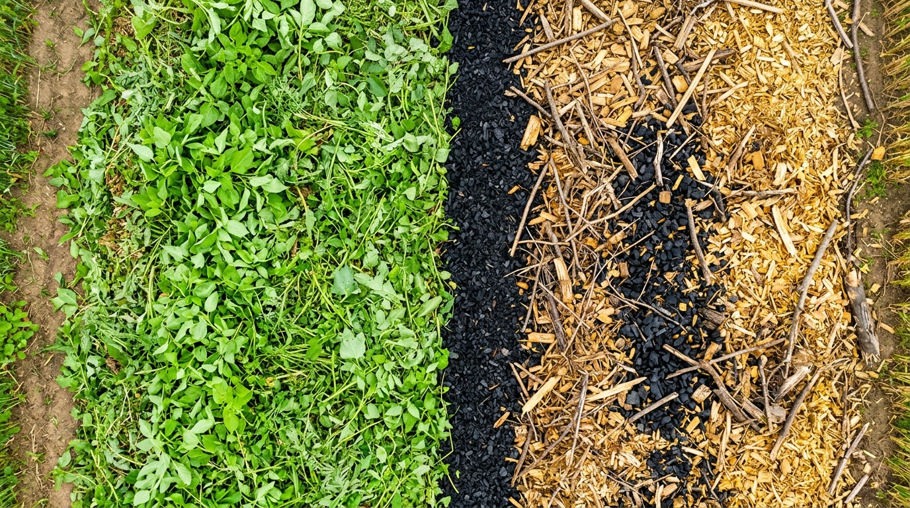
ETAPA 3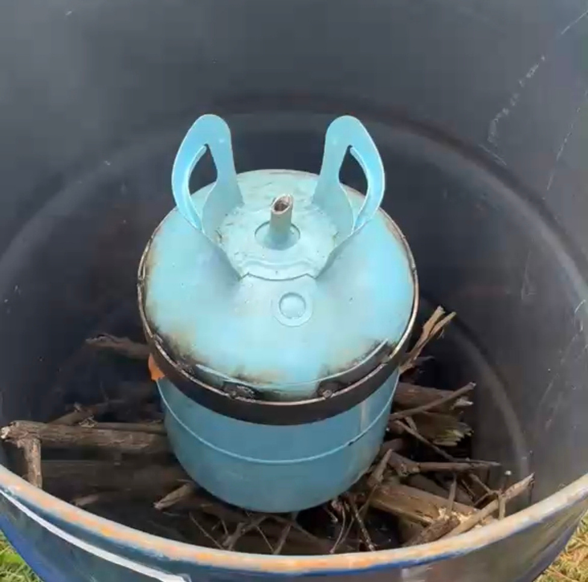
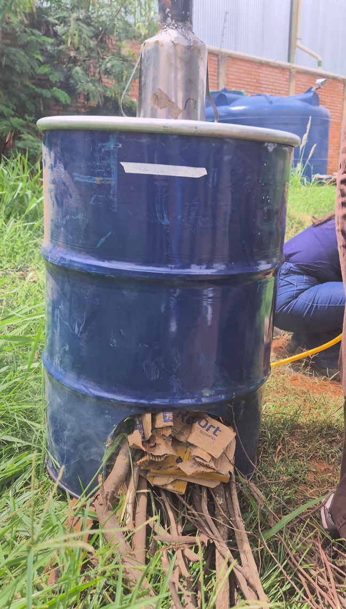
“Para tudo isso acontecer, esses dois azuis são a base do nosso projeto.”
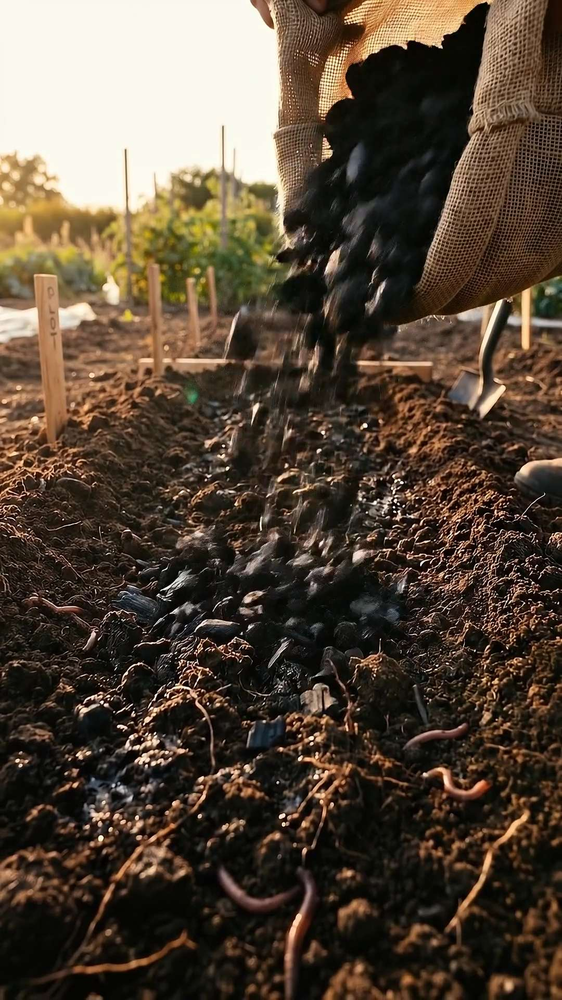
Seus microporos guardam água e protegem o milho contra dias secos.
Equilibra o pH do solo e evita que o adubo se perca com a chuva.
Em vez de virar fumaça no ar, o carbono fica preso no solo por anos.
Aumenta a vida útil do solo (microbiota) e reduz microrganismos nocivos.
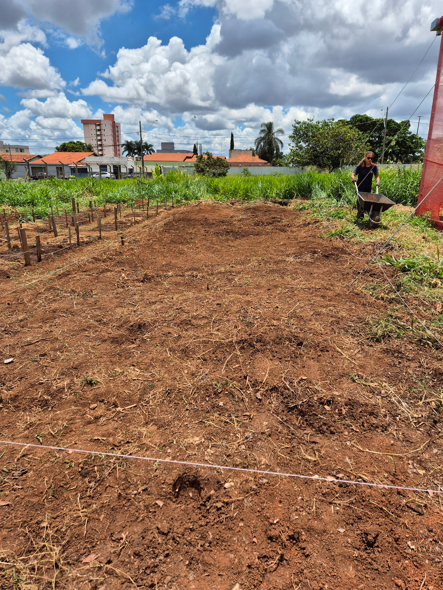
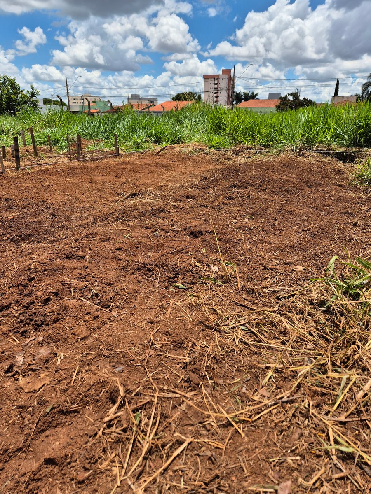
“Limpo, cuidado e pronto para ser testemunha de algo sustentável.”
Como testamos diferentes quantidades e formas de aplicar o biochar na cultura de Zea mays L.:
Espalhado sobre a terra pronta: reduz a evaporação da água e protege a superfície do canteiro.
Misturado dentro da terra: fica em contato direto com as raízes do milho, soltando o solo e retendo nutrientes.
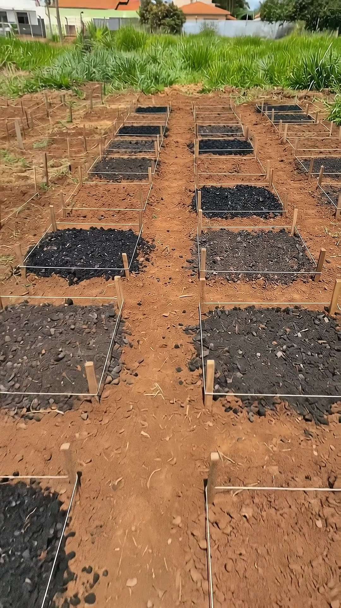
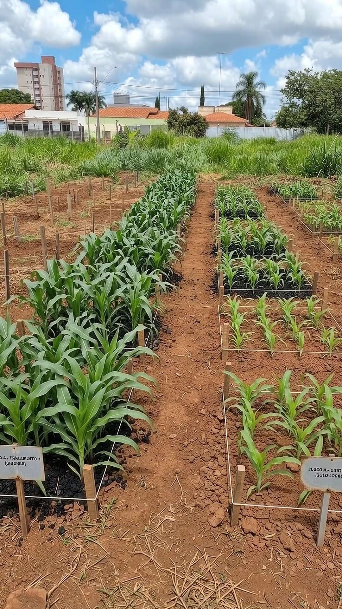
Quantidade e tamanho das espigas colhidas.
Comprimento radicular e absorção de água.
Altura total e vigor das folhas do milho.
Diâmetro do caule, massa fresca e massa seca.
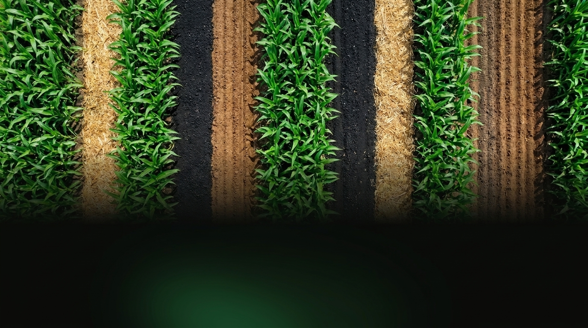
Menos resíduo nos aterros • Mais água e carbono no solo • Mais alimento no campo
